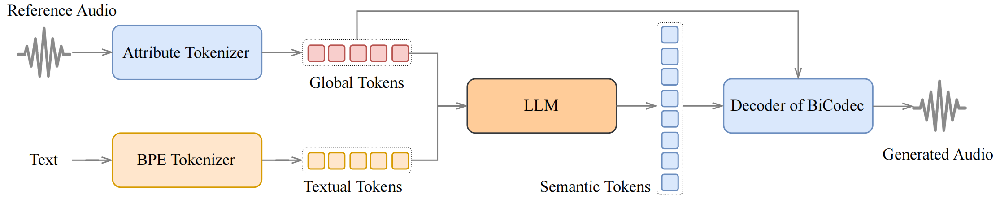

Spark-TTS:
An Efficient LLM-Based Text-to-Speech Model with Single-Stream Decoupled Speech Tokens
Spark-TTS, a novel system built upon our proposed BiCodec, a single-stream speech codec that strategically decomposes speech into two complementary token types: low-bitrate semantic tokens for linguistic content and fixed-length global tokens for speaker-specific attributes. This disentangled representation, combined with the Qwen2.5 LLM and a chain-of-thought (CoT) generation approach, enables both coarse-grained attribute control (e.g., gender, pitch level) and fine-grained parameter adjustment (e.g., precise pitch values, speaking rate).
Contents
Inference Overview of Voice Cloning

Figure 1. An overview of the Spark-TTS inference pipeline for zero-shot TTS (Voice Cloning).
Inference Overview of Controlled Generation

Figure 2. An overview of the Spark-TTS inference pipeline for controlled generation.
Zero-shot TTS (Voice Cloning)
| Language | Prompt | Same Language Generation | Cross-linugal Generation |
|---|---|---|---|
| EN | From Seed-TTS's Demo |
I don't really care what you call me. I've been a silent spectator, watching species evolve, empires rise and fall. But always remember, I am mighty and enduring. Respect me and I'll nurture you; ignore me and you shall face the consequences. |
顿时，气氛变得沉郁起来。乍看之下，一切的困扰仿佛都围绕在我身边。我皱着眉头，感受着那份压力，但我知道我不能放弃，不能认输。于是，我深吸一口气，心底的声音告诉我：“无论如何，都要冷静下来，重新开始。” |
From Seed-TTS's Demo |
Dealing with family secrets is never easy. Yet, sometimes, omission is a form of protection, intending to safeguard some from the harsh truths. One day, I hope you understand the reasons behind my actions. Until then, Anna, please, bear with me. |
处理家庭秘密从来都不是一件容易的事。然而，有时候，隐瞒是一种保护形式，旨在保护一些人免受残酷的真相伤害。有一天，我希望你能理解我行为背后的原因。在那之前，安娜，请容忍我。 |
|
From Seed-TTS's Demo |
The combinations of different textures and flavors create a perfect harmony. The succulence of the steak, the tartness of the cranberries, the crunch of pine nuts, and creaminess of blue cheese make it a truly delectable delight. Enjoy your culinary adventure! |
听着你的话，我心里五味杂陈。虽然我愿意一直在你身边，承担一切不幸，但我知道只有让你自己面对，才能真正让你变得更强大。所以，你要记得，无论面对何种困难，都请你坚强，我会在心里一直支持你的。 |
|
Donald Trump |
We know technology is advancing quickly, but AI is moving even faster. It's already transforming our lives – from the way we work and stay connected, to how we tackle some of the world's biggest challenges. |
我们知道技术发展很快，但人工智能的发展更为迅速。它已经在改变我们的生活——从我们的工作和联系方式，到我们如何应对世界上最大的挑战。 |
|
Benedict Cumberbatch |
You see, the funny thing about life is that it never really goes the way you plan. You think you've got it all figured out, mapped out neatly in your head—this is where I'll be, this is what I'll do, and everything will fall into place. |
你看，人生有趣的地方就在于，它从不会完全按你的计划行进。你以为自己已经洞察一切，在脑海中勾勒出清晰的蓝图——我会在这里，我会做这个，一切都会自然而然地步入正轨。 |
|
Rick (from Rick and Morty) |
Then I would never talk to that person about boa constrictors, or primeval forests, or stars. I would bring myself down to his level. |
那么我永远不会和那个人谈论巨蛇、原始森林或星星。我会把自己降到他的水平。 |
|
Furina (from Genshin Impact) |
I'm very confident in my singing skills, but there aren't many pieces of music that are worthy of my vocal prowess. I hope the creatives in the theater troupe get their act together and don't keep me waiting in vain. |
我对自己的歌唱水平还是很有自信的，不过值得我开口唱诵的段落可不多。希望那些剧团里的创作者们加把劲，不要让我等太久。 |
|
Zhongli (from Genshin Impact) |
They were loyal servants of Liyue. They lived through a bitter war and sacrificed much. All of Liyue, from harbor to chasm, is indebted to the yakshas for their protection over the years. |
夜叉一族是璃月的功臣，他们历经战事，牺牲良多。近至海港，远至层岩，一直以来，璃月都因他们的庇佑而平安。 |
|
| ZH | 后羿 Hou Yi | 有一种撕心裂肺的感觉，是辣椒，我加了辣椒！ |
There's this heart-wrenching feeling—it's the chili, I added chili! |
赞助商声明 Sponsor Statement |
智能生活，触手可及，本节目由致力于人工智能创新的未来公司冠名播出。数据驱动决策，为你加速未来，本节目由深度学习技术领导者，未来科技特约播出。打造智慧城市新时代，本节目由未来智能硬件先锋，未来科技赞助播出。 |
Smart living, within reach. This programme is proudly sponsored by Future Company, dedicated to AI innovation. Data-driven decision-making, accelerating your future. This programme is brought to you by the leaders in deep learning technology, Future Tech. Building the new era of smart cities, this programme is sponsored by Future Technology, a pioneer in intelligent hardware. |
|
陈鲁豫 Chen Luyu |
你知道吗，人工智能就像是我们生活中的一个“无形伙伴”，它不声不响地走进了我们的世界，改变了我们的工作、生活、甚至思维方式。它让我们看到了很多可能性，也让我们意识到，未来的生活可能比我们想象的还要复杂和美好。 |
Did you know that artificial intelligence is like an "invisible partner" in our lives? It quietly entered our world, changing our work, our lives, and even the way we think. It has shown us many possibilities and made us realize that the future could be more complex and beautiful than we imagine. |
|
杨澜 Yang Lan |
语音合成技术，其实早已经悄悄走进了我们的生活。从智能语音助手，到有声读物，再到个性化语音复刻，这项技术正在改变我们获取信息、与世界互动的方式。而且它的进步速度，远超我们的想象。 |
Speech synthesis technology has quietly integrated into our daily lives. From smart voice assistants to audiobooks and even personalised voice cloning, this technology is transforming the way we access information and interact with the world. Moreover, its advancement is progressing at a pace far beyond our imagination. |
|
刘德华 Andy Lau |
所以我觉得好的技术，它一定是有温度的，能够真正服务于大家，而不是冷冰冰地摆在那里。就像现在的语音合成技术，越来越自然，越来越贴近人们的需求，这种发展是有生命力的。它就跟当年那些突破性的科技一样，一开始可能觉得很新鲜，但慢慢地，它就融入生活，变成大家离不开的一部分了。 |
I think good technology should feel warm and truly serve people, not just sit there like something cold and lifeless. Take speech synthesis, for example—it's getting more natural and closer to what people actually need. That's real progress, something with life in it. It's just like those game-changing technologies from the past—at first, they seemed new and exciting, but before you know it, they become a part of everyday life, something we can't imagine living without. |
|
贾玲 Jia Ling |
但有时候，你会想，人工智能是不是也像我们一样，也在探索自己的“人生”？它们从数据里学到知识，从经验里不断进步。我们不知道未来它会成为什么样，但它注定会在我们的生活中扮演越来越重要的角色。 |
Sometimes, you might wonder, is artificial intelligence, like us, also exploring its own "life"? It learns knowledge from data and continuously improves from experience. We don't know what it will become in the future, but it is destined to play an increasingly important role in our lives. |
|
周杰伦 Jay Chou |
我觉得这种运动其实不是说靠机会的，我觉得对每个人来讲，像我们歌手来讲，我觉得其实都是你要自己去努力，然后才可以达到自己的梦想。 |
I don't think this kind of sport is about relying on luck. For each of us, especially for singers like us, I believe it's all about putting in the effort yourself. Only then can you reach your dreams. |
|
徐志胜 Xu Zhisheng |
我去便利店买个水，结账的时候，老板问我‘你要袋子吗？’ 我说‘不用，手上就有口袋’，他看着我一眼，然后很认真地说‘那就请尽量不要放进袋子里’。 |
I went to a convenience store to buy a bottle of water. At the checkout, the cashier asked, "Do you need a bag?" I said, "No, I already have pockets." He looked at me for a moment, then seriously said, "In that case, please try not to put it in a bag." |
|
马云 Jack Ma |
我们每个人都在追求不同的目标，很多人认为成功就是要赚很多钱，但我认为，成功的真正含义是：如何让你的想法改变世界，让更多的人受益。所以，不要怕失败，不要怕挫折，最重要的是，你要始终保持一颗学习的心，永远不放弃。 |
We all pursue different goals. Many think success means making money, but I believe it's about changing the world and helping others. So, don't fear failure or setbacks—keep learning and never give up. |
|
余承东 Richard Yu |
我们正在不断打破技术的边界，打造更加智能、更加人性化的产品。未来的智能手机、智能设备，将不再仅仅是工具，它们将成为我们生活的一部分，帮助我们更加高效、更加便捷地与世界连接。 |
We're pushing technology's limits to create smarter, more user-friendly products. In the future, smartphones and smart devices will be part of our lives, helping us connect more easily and efficiently. |
|
芙宁娜 Furina (from Genshin Impact) |
我对自己的歌唱水平还是很有自信的，不过值得我开口唱诵的段落可不多。希望那些剧团里的创作者们加把劲，不要让我等太久。 |
I'm very confident in my singing skills, but there aren't many pieces of music that are worthy of my vocal prowess. I hope the creatives in the theater troupe get their act together and don't keep me waiting in vain. |
|
钟离 Zhongli (from Genshin Impact) |
夜叉一族是璃月的功臣，他们历经战事，牺牲良多。近至海港，远至层岩，一直以来，璃月都因他们的庇佑而平安。 |
They were loyal servants of Liyue. They lived through a bitter war and sacrificed much. All of Liyue, from harbor to chasm, is indebted to the yakshas for their protection over the years. |
|
殷夫人 Lady Yin (from Nezha: Birth of the Demon Child) |
你是天地间最独特的存在，所有的磨难只是为你铺设更坚固的道路。无论前方有多少风雨，我都相信，你必定能够撑起一片属于自己的天空。 |
You are the most unique existence in the world, and all the hardships are just paving a stronger path for you. No matter how many storms lie ahead, I believe you will definitely be able to hold up a sky that belongs to you. |
|
李靖 Li Jing (from Nezha: Birth of the Demon Child) |
你可知为什么他们都不愿意和你合作？因为你太聪明了，聪明到让他们觉得自己毫无优势。他们害怕与你站在同一起跑线，怕被你的智慧甩得远远的。其实，真正让他们害怕的，不是你的聪明，而是他们自己内心的自卑和不自信。 |
Do you know why they refuse to work with you? Because you're too smart, smart enough to make them feel like they have no advantage. They're afraid to stand on the same starting line with you, afraid of being left far behind by your intelligence. In reality, what they're really afraid of isn't your smarts, but their own insecurity and lack of self-confidence. |
|
哪吒 Nezha (from Nezha: Birth of the Demon Child) |
他们说我注定不配拥有什么，注定要背负那些沉重的枷锁，活在他们的期望里。每天都得做那些他们安排好的事，像个没有自由的傀儡，根本没法活成自己。这个世界，这些人，真的一点也不值得我去在乎。 |
They say I'm destined to have nothing, doomed to carry those heavy chains, living according to their expectations. Every day, I'm forced to do the things they've planned for me, like a puppet with no freedom, unable to live as myself. This world, these people, really aren't worth my concern at all. |
Coarse-Grained Control
| Pitch Level | Speed Level | Generation for Male | Generation for Female |
|---|---|---|---|
| Low | Slow | ||
| Low | Fast | ||
| High | Fast | ||
| High | Slow | ||
| Very Low | Very Slow | ||
| Very Low | Very Fast | ||
| Very High | Very Fast | ||
| Very High | Very Slow | ||
| Moderate | Moderate |
Fine-Grained Control
| Pitch Value for Male (Mel) The range of all values falls within Moderate. |
Generation for Chinese (4 SPS) |
Pitch Value for Female (Mel) The range of all values falls within Moderate. |
Generation for English (5 SPS) |
|---|---|---|---|
| 165 | 265 | ||
| 175 | 275 | ||
| 185 | 285 | ||
| 195 | 295 | ||
| 205 | 305 |